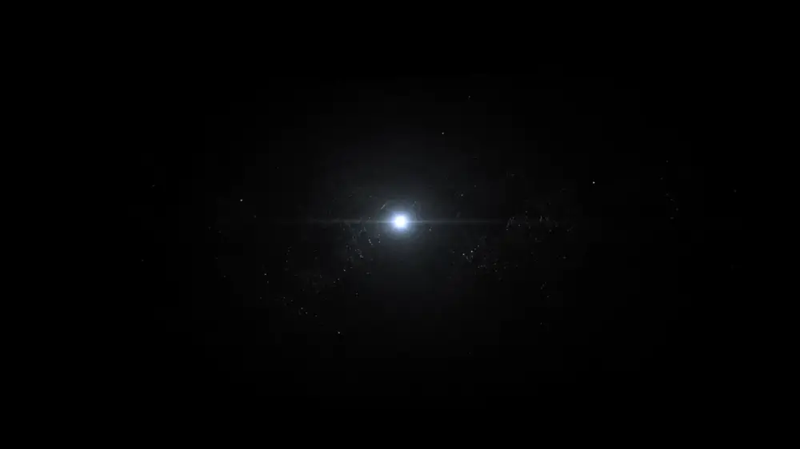

Every idea begins unseen.
Before it can move, it needs a pulse.
Before it can be remembered, it needs a body.

We give ideas a body.
Make it work. Invisible systems. Visible impact.
Strategy & research · Website & application · Platform & interactive · Digital systems
Make it matter. Emotion needs a language.
Creative direction & film · Photography & identity · Campaign & fashion · Music & sound
Make it real. Ideas deserve a place to exist.
Events & installation · Retail & exhibition · Physical brand experience
Attention is rented.
Memory is owned.